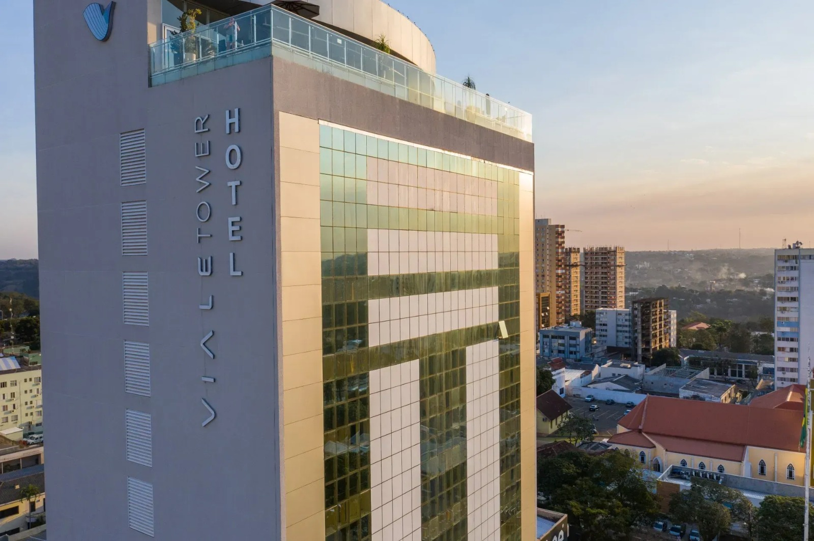

Práticas de vivências interdisciplinares
Proposta de intervenção psicoeducativa breve com a equipe de governança do Hotel Viale Tower, Foz do Iguaçu, Paraná.

Faculdade Uniguaçu · Curso de Psicologia · 24 set 2026
Abrir agradecendo à banca e situando o grupo: somos quatro estudantes de Psicologia da Faculdade Uniguaçu, com mentoria profissional e orientação docente.
Em uma frase: propomos uma intervenção psicoeducativa breve de três encontros com as camareiras do Hotel Viale Tower, em Foz do Iguaçu. O foco não é tratar transtornos, e sim promover saúde mental e bem-estar no próprio ambiente de trabalho.
Substituir [DATA] pela data da apresentação.
Acadêmicos, docentes e mentores
Quatro estudantes de Psicologia, uma mentora profissional e um docente orientador.
Faculdade Uniguaçu, Foz do Iguaçu, Paraná
Apresentar rapidamente cada integrante. Gisleine atua como mentora profissional da área de Psicologia na cidade; Gabriel é docente do curso, especialista em educação, e responde pela orientação metodológica.
Deixar claro o desenho de trabalho: os estudantes conduzem a intervenção, com supervisão da mentora e do docente.
Demanda
A rotina de governança está associada a dor e desgaste físico.
Burgel et al., 2010
Turnos alternados, fadiga e privação de sono comprometem a saúde mental.
Hotel et al., 2025
Condições psicossociais adversas e baixo suporte social associam-se a ansiedade e depressão.
García-Buades et al., 2025
Trabalhadores e gestores reconhecem a necessidade de intervenção no setor.
Rosemberg et al., 2022
Esta é a página que justifica a existência do projeto. O argumento central: a demanda não é presumida pelo grupo, ela está documentada na literatura internacional sobre trabalho em hotelaria.
Se a banca perguntar sobre magnitude, citar que os estudos com camareiras encontram associação consistente entre condições psicossociais do trabalho e sintomas de ansiedade e depressão, sem transformar isso em número que não coletamos.
Questão norteadora
De que forma uma intervenção psicoeducativa breve pode contribuir para a promoção da saúde mental e do bem-estar das camareiras em ambiente de hotelaria?
Ler a questão devagar. Ela delimita três escolhas do projeto: intervenção breve (três encontros, não um programa longo), psicoeducação (não psicoterapia) e promoção de bem-estar (não tratamento de transtornos).
Esse recorte responde à realidade das camareiras: turnos, carga de quartos por dia e pouca disponibilidade de horário.
Objetivo geral
Ler o objetivo geral uma vez, devagar. Ele deve soar como uma frase só: promover saúde mental e bem-estar, com um método (psicoeducação breve) e um lugar (o ambiente de trabalho).
Se a banca pedir, o objetivo geral não menciona "reduzir sintomas"; isso fica nos objetivos específicos, medidos pela DASS-21.
Objetivos específicos
Os dois primeiros objetivos são de caracterização e triagem; os três últimos correspondem exatamente aos três encontros. Isso mostra coerência entre o que se mede e o que se intervém.
A DASS-21 entra como instrumento de triagem, não como diagnóstico; vale reforçar esse limite se a banca questionar.
Introdução
A literatura mostra que programas breves já produziram redução de ansiedade em trabalhadores de hotelaria.
Ponto de partida: já existe evidência de que intervenções curtas funcionam nesse contexto. Não estamos inventando um formato; estamos adaptando um procedimento com respaldo.
Se pedirem o referencial de mindfulness, a definição usada no projeto é a de atenção ao momento presente, intencional e sem julgamento (Zhang et al., 2025).
Justificativa
O argumento é de prevenção e promoção, não de tratamento. O projeto não substitui atendimento psicológico; ele cria um espaço de reconhecimento emocional e de ferramentas de autorregulação.
Destacar a viabilidade: sem custo de deslocamento, dentro da jornada, com uma arquitetura de encontro que já prevê pausas e tarefas curtas.
Metodologia
Coleta inicial concluída
Três encontros a realizar
Deixar claro o que já foi feito: a coleta demográfica inicial está concluída. Os encontros ainda não ocorreram. A DASS-21 é aplicada antes do primeiro encontro.
Explicar a arquitetura fixa dos encontros: sempre abrir com prática de mindfulness, entrar no conteúdo e fechar com tarefa de casa. A previsibilidade da estrutura ajuda na adesão.
A intervenção
Psicoeducação sobre estresse e seu ciclo de manifestação, para normalizar a experiência. Rodas de conversa e exercícios de respiração como autorregulação.
Reconhecimento e nomeação das próprias emoções no trabalho e compreensão das emoções alheias. Dinâmicas de autoconsciência, como o termômetro emocional, e roleplay de situações de atendimento a hóspedes.
Reestruturação cognitiva pela técnica de triangulação cognitiva, para identificar e reformular pensamentos negativos automáticos ligados à autocobrança e à invisibilidade. Encerra com um plano pessoal de enfrentamento.
Este slide é o coração da proposta. Cada encontro responde a um objetivo específico e tem uma técnica prática identificável: respiração, termômetro emocional e roleplay, triangulação cognitiva.
Se pedirem detalhe, o roleplay trabalha situações reais de atendimento a hóspedes, para reduzir o desgaste do trabalho emocional e fortalecer a escuta empática.
O terceiro encontro termina com um plano pessoal de enfrentamento; é o produto concreto que a participante leva embora.
Cronograma
As faixas marcadas como [DATA] são placeholders: substituir pelos períodos reais antes da apresentação.
O que importa comunicar é a ordem: contato e caracterização, triagem, três encontros em sequência e devolutiva com relatório final ao hotel.
Referências
Referencial completo do projeto: evidência de eficácia de intervenções breves, contexto ocupacional das camareiras, necessidades de intervenção e instrumentos.
Destacar dois pontos: a DASS-21 na versão brasileira validada (Vignola; Tucci, 2014) sustenta a triagem; e o estudo de Biding e Nordin (2014) sustenta o formato breve de três sessões.
A referência completa, com links de acesso, está no resumo expandido entregue à banca.